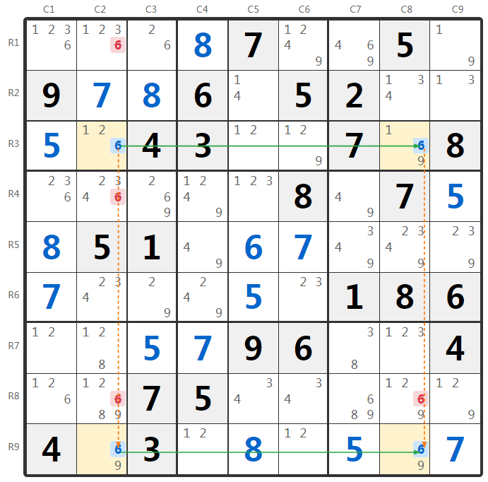

解题技巧
数独X-Wing技巧详解：跨行列的高级排除法
X-Wing（X翼）是数独高级技巧中最经典的方法之一，也是解决困难和专家级数独的必备技巧。它的名字来源于《星球大战》中的X翼战斗机，因为这个技巧形成的模式在视觉上像一个X形。其核心思想是：当某个候选数在两行中各只出现在相同的两列位置时，可以从这两列的其他格子中排除该候选数。
核心原理：
如果某个数字在行A只出现在列X和列Y，同时在行B也只出现在列X和列Y，那么这个数字在行A和行B中必定分别占据列X和列Y的某个位置。因此，列X和列Y的其他格子（不在行A和行B上的）都不可能填入这个数字。
如果某个数字在行A只出现在列X和列Y，同时在行B也只出现在列X和列Y，那么这个数字在行A和行B中必定分别占据列X和列Y的某个位置。因此，列X和列Y的其他格子（不在行A和行B上的）都不可能填入这个数字。
X-Wing 规则
如果某个候选数在两行中各只出现在相同的两列位置，
那么该候选数在这两列的其他行（不在X-Wing的两行上）都可以删除。
在阅读本文前，建议先掌握数独行列宫的命名规则和中级技巧，这将帮助你理解下面的分析示例。
X-Wing原理：四个候选数6形成矩形顶点，X形交叉线展示消除逻辑
实例分析：行基X-Wing
我们来看一个经典的X-Wing例子，涉及第3行和第9行中的候选数 6。

图：第3行和第9行的候选数6形成X-Wing模式
当前盘面数据
根据CSV81格式的候选数数据，我们关注第3行和第9行中候选数6的分布：
第3行各格子：
- R3C1：已填数字 5
- R3C2：候选数 {1, 2, 6}
- R3C3：已填数字 4（给定）
- R3C4：已填数字 3（给定）
- R3C5：候选数 {1, 2}
- R3C6：候选数 {1, 2, 9}
- R3C7：已填数字 7（给定）
- R3C8：候选数 {1, 6, 9}
- R3C9：已填数字 8（给定）
第9行各格子：
- R9C1：已填数字 4（给定）
- R9C2：候选数 {6, 9}
- R9C3：已填数字 3（给定）
- R9C4：候选数 {1, 2}
- R9C5：已填数字 8
- R9C6：候选数 {1, 2}
- R9C7：已填数字 5
- R9C8：候选数 {6, 9}
- R9C9：已填数字 7
第2列中需要检查的格子（排除目标）：
- R1C2：候选数 {1, 2, 3, 6}
- R4C2：候选数 {2, 3, 4, 6}
- R8C2：候选数 {1, 2, 6, 8, 9}
第8列中需要检查的格子（排除目标）：
- R8C8：候选数 {1, 2, 6, 9}
分析过程
1
观察第3行：在第3行中，候选数 6 只出现在两个位置：R3C2（候选数1,2,6）和 R3C8（候选数1,6,9）。
2
观察第9行：在第9行中，候选数 6 也只出现在两个位置：R9C2（候选数6,9）和 R9C8（候选数6,9）。
3
发现X-Wing模式：候选数6在第3行和第9行都只出现在第2列和第8列，形成了一个矩形的四个顶点：R3C2、R3C8、R9C2、R9C8。这就是X-Wing模式。
X-Wing 矩形模式

四个6形成矩形顶点，X形交叉线展示消除逻辑，红色箭头表示可消除的方向
4
理解推理逻辑：因为第3行的6只能填在R3C2或R3C8，第9行的6只能填在R9C2或R9C8，所以存在两种情况：
- 情况1：R3C2是6，那么第9行只能在R9C8填6
- 情况2：R3C8是6，那么第9行只能在R9C2填6
无论哪种情况，第2列和第8列的6都被第3行和第9行占据。
5
执行排除：因此，第2列中除了第3行和第9行以外的格子都不能填6，第8列中除了第3行和第9行以外的格子也都不能填6。具体来说：
- R1C2：删除候选数 6（保留1,2,3）
- R4C2：删除候选数 6（保留2,3,4）
- R8C2：删除候选数 6（保留1,2,8,9）
- R8C8：删除候选数 6（保留1,2,9）
结论：
X-Wing：在第3行和第9行中，候选数 6 只在 R3C2、R3C8、R9C2、R9C8（都在第2列和第8列）。
操作：从 R1C2、R4C2、R8C2、R8C8 删除候选数 6。
X-Wing：在第3行和第9行中，候选数 6 只在 R3C2、R3C8、R9C2、R9C8（都在第2列和第8列）。
操作：从 R1C2、R4C2、R8C2、R8C8 删除候选数 6。
X-Wing的两种形式
X-Wing可以有两种对称的形式：
1. 行基X-Wing（Row-based X-Wing）
就是上面示例的情况：
- 观察对象：两行
- 模式特征：某个候选数在这两行中各只出现在相同的两列
- 排除目标：从这两列的其他行中删除该候选数
2. 列基X-Wing（Column-based X-Wing）
形式相反但原理相同：
- 观察对象：两列
- 模式特征：某个候选数在这两列中各只出现在相同的两行
- 排除目标：从这两行的其他列中删除该候选数
记忆技巧：
行基X-Wing删列，列基X-Wing删行。
如果X-Wing是在两行中发现的，就从列中删除；如果是在两列中发现的，就从行中删除。这是因为候选数在行（或列）中的位置固定后，对应的列（或行）就被占据了。
行基X-Wing删列，列基X-Wing删行。
如果X-Wing是在两行中发现的，就从列中删除；如果是在两列中发现的，就从行中删除。这是因为候选数在行（或列）中的位置固定后，对应的列（或行）就被占据了。
如何发现X-Wing？
寻找X-Wing需要系统化的观察：
1
选择一个候选数：专注于某个候选数（1-9中的一个），逐个分析。
2
寻找只有两个候选位置的行（或列）：找出该候选数只出现在两个格子中的行（或列）。
3
寻找配对：看看是否有另一行（或列）也是该候选数只出现在两个格子，且位置在相同的两列（或行）上。
4
确认X-Wing模式：如果找到这样的两行（或两列），就形成了X-Wing模式，形成一个矩形的四个顶点。
5
执行排除：从相应的列（或行）的其他格子中删除该候选数。
注意事项：
- X-Wing需要恰好两行（或两列），每行（或列）中候选数恰好出现在两个位置
- 这两行（或列）中候选数的列（或行）位置必须完全相同
- 如果一行中候选数出现在3个或更多位置，不能形成X-Wing
- X-Wing是跨行列的技巧，不涉及宫的概念
- 寻找X-Wing比较耗时，建议在中级技巧都用过之后再尝试
X-Wing与其他技巧的关系
X-Wing vs 区块排除法
两者都涉及行列关系，但层次不同：
- 区块排除法：在一个单元（行/列/宫）内部观察，利用行列与宫的交集
- X-Wing：跨越两个单元观察，利用两行（或两列）之间的对称关系
X-Wing的扩展
X-Wing可以扩展到更复杂的形式：
- Swordfish（剑鱼）：三行三列的扩展版本
- Jellyfish（水母）：四行四列的扩展版本
这些技巧的原理与X-Wing相同，只是涉及的行列数量更多，识别难度也更大。
技巧总结
X-Wing技巧的应用要点：
- 观察维度：跨行列观察，寻找矩形对称模式
- 识别条件：某个候选数在两行（或两列）中各只出现在相同的两列（或两行）
- 形成模式：四个候选位置形成矩形的四个顶点
- 排除规则：行基X-Wing删列，列基X-Wing删行
- 应用场景：中级技巧无法突破时的高级解题手段
- 识别难度：需要系统地分析每个候选数的分布，比较费时
实战建议：
X-Wing在实战中并不常见，但在困难题目中往往是突破的关键。建议：
X-Wing在实战中并不常见，但在困难题目中往往是突破的关键。建议：
- 先用完所有中级技巧（数对、三数组、隐性数对等）
- 选择候选数较少的数字进行分析（如只剩5-6个候选位置的数字）
- 使用候选数标记功能，更容易看出分布模式
- 可以借助笔记或草稿纸记录每个数字在各行列的分布
练习建议
要熟练运用X-Wing技巧，建议：
- 解题时系统地检查每个候选数在各行列的分布
- 使用不同颜色标记候选数，帮助视觉识别对称模式
- 遇到高难度题目时，先用中级技巧，再主动寻找X-Wing机会
- 理解原理比记住术语更重要，明白"为什么能排除"
立即练习：
开始一局困难难度的数独游戏，专门寻找和应用X-Wing技巧！
开始一局困难难度的数独游戏，专门寻找和应用X-Wing技巧！